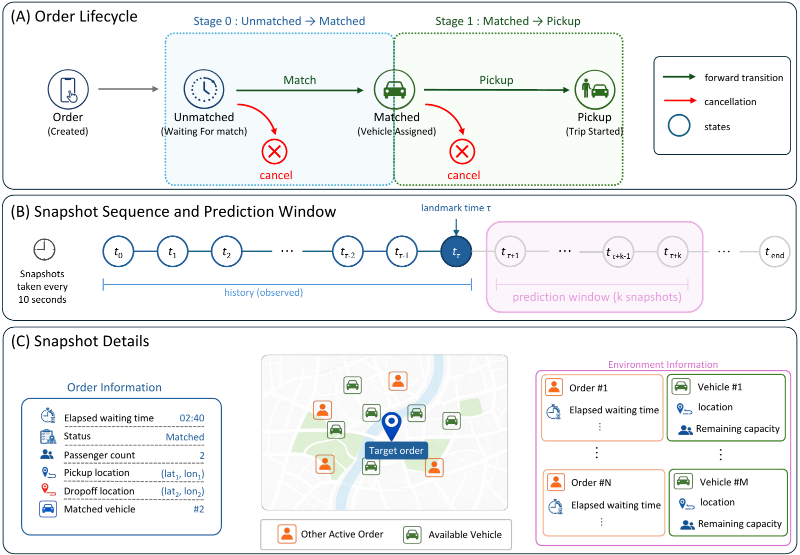
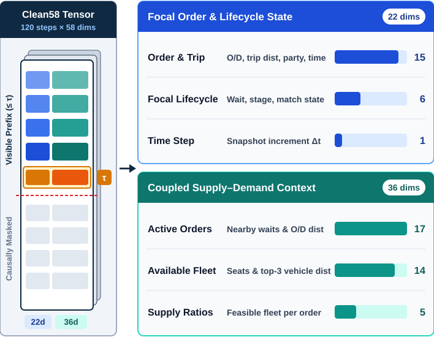

SurvCancel: A Longitudinal Dataset and Benchmark for Dynamic Order Cancellation Prediction in On-Demand Ride-Sharing Systems
Real-world order and fleet histories for predicting cancellation risk before pickup.
-
173,037Released ordersAcross four service regions
-
7.94MSnapshotsOne every 10 seconds
-
58Clean58 features22 order + 36 context
-
7Benchmark modelsID, LORO, and chronological
Ride-Sharing & Motivation
One cancellation can reshape a shared route.
In on-demand ride-sharing, several passengers share vehicles under seat and detour limits. A canceled order can change which requests the fleet serves next.
- 01Order cancelsA passenger leaves before pickup
- 02Wasted detourThe vehicle may already be en route
- 03Missed poolingReserved seats could have served others
- 04Route replanningDispatchers may need to revise assignments
SurvCancel tracks each order and its changing fleet context. It gives researchers a common benchmark for estimating risk before a vehicle is assigned and again after matching.
Read the paper abstract
Passenger-order cancellation is a critical source of uncertainty in on-demand ride-sharing systems, where requests, assignments, and vehicle routes evolve continuously in real time. Due to shared capacity and coupled routes, a single cancellation may propagate through downstream matching and routing decisions, degrading system efficiency and service reliability. However, cancellation prediction in on-demand ride-sharing remains difficult to study systematically due to the lack of large-scale longitudinal datasets, standardized evaluation protocols, and fine-grained real-time benchmarks.
In this work, we introduce SurvCancel, a real-world longitudinal dataset and benchmark for dynamic passenger-order cancellation prediction in on-demand ride-sharing systems. Constructed from operational logs collected across four service regions, SurvCancel contains 173K released orders and 7.9M time-dependent snapshots, capturing both order-level attributes and the evolving supply-demand environment throughout each order's lifecycle. We formulate cancellation prediction as a stage-conditioned dynamic survival task: at each landmark time, models estimate short-term cancellation risk from the historical state sequence observed so far. Evaluating representative classical and neural survival models under both in-distribution and distribution-shift protocols reveals stage-dependent model behavior and distinct robustness patterns across regions and time periods.
Dynamic Survival Task

- ID In-distribution
- LORO Unseen regions
- Chrono Future dates
The Dataset & Clean58
Four regions, from request to pickup
Orders are tracked from creation through matching to pickup or cancellation. Each time step includes the order state, nearby active requests, and available vehicles.
| Region | Days | Orders | Snapshots |
|---|---|---|---|
| R1 | 38 | 60,548 | 2,717,147 |
| R2 | 72 | 6,518 | 240,075 |
| R3 | 72 | 42,106 | 2,099,571 |
| R4 | 72 | 63,865 | 2,887,378 |
| Total | — | 173,037 | 7,944,171 |

Main In-Distribution Benchmark
We benchmark six representative survival models alongside RiskPool, our lightweight history-pooling architecture. All methods are evaluated on the shared Clean58 representation and fixed test landmarks across three random seeds.

View stage-wise benchmark scores
| Model | Overall C-index ↑ | Stage 0 C-index ↑ | Stage 1 C-index ↑ | Brier ↓ |
|---|---|---|---|---|
| RiskPool (ours) | 0.7527 | 0.7650 | 0.7061 | 0.0768 |
| DynDeepHit [2] | 0.7496 | 0.7618 | 0.7090 | 0.0765 |
| TraCeR [4] | 0.7485 | 0.7616 | 0.7000 | 0.0894 |
| RSF [6] | 0.7458 | 0.7561 | 0.7002 | 0.0757 |
| SurvTRACE [3] | 0.7350 | 0.7608 | 0.6327 | 0.0928 |
| Landmark Cox [5][7] | 0.7235 | 0.7342 | 0.6741 | 0.0776 |
| DeepHit [1] | 0.6827 | 0.7127 | 0.5866 | 0.0793 |
Baselines: DeepHit [1], DynDeepHit [2], SurvTRACE [3], TraCeR [4], Landmark Cox [5][7], and Random Survival Forests (RSF) [6].
Spatial & Temporal Distribution Shifts
We compare the C-index on unseen regions and on future orders with the corresponding in-distribution reference. Regional results use an equal-region average; chronological results pool the test orders.

References
- [1]Changhee Lee, William R. Zame, Jinsung Yoon, and Mihaela van der Schaar. DeepHit: A Deep Learning Approach to Survival Analysis With Competing Risks. AAAI, 2018.
- [2]Changhee Lee, Jinsung Yoon, and Mihaela van der Schaar. Dynamic-DeepHit: A Deep Learning Approach for Dynamic Survival Analysis With Competing Risks Based on Longitudinal Data. IEEE Transactions on Biomedical Engineering, 67(1):122–133, 2020.
- [3]Zifeng Wang and Jimeng Sun. SurvTRACE: Transformers for Survival Analysis With Competing Events. ACM BCB, 2022.
- [4]Maxmillan Ries and Sohan Seth. TraCeR: Transformer-Based Competing Risk Analysis with Longitudinal Covariates. arXiv:2512.18129, 2025.
- [5]D. R. Cox. Regression Models and Life-Tables. Journal of the Royal Statistical Society, Series B, 34(2):187–220, 1972.
- [6]Hemant Ishwaran, Udaya B. Kogalur, Eugene H. Blackstone, and Michael S. Lauer. Random Survival Forests. The Annals of Applied Statistics, 2(3):841–860, 2008.
- [7]Hans C. van Houwelingen. Dynamic Prediction by Landmarking in Event History Analysis. Scandinavian Journal of Statistics, 34(1):70–85, 2007.
- [8]Frank E. Harrell Jr., Kerry L. Lee, Robert M. Califf, David B. Pryor, and Robert A. Rosati. Regression Modelling Strategies for Improved Prognostic Prediction. Statistics in Medicine, 3(2):143–152, 1984.
- [9]Glenn W. Brier. Verification of Forecasts Expressed in Terms of Probability. Monthly Weather Review, 78(1):1–3, 1950.
BibTeX
@inproceedings{liu2026survcancel,
title = {SurvCancel: A Longitudinal Dataset and Benchmark for Dynamic Order Cancellation Prediction in On-Demand Ride-Sharing Systems},
author = {Liu, Huayang and Zheng, Mingyu and Zhang, Wei and Bian, Yijun and Wang, Kai},
booktitle = {Advances in Neural Information Processing Systems (NeurIPS), Evaluations and Datasets Track},
year = {2026}
}